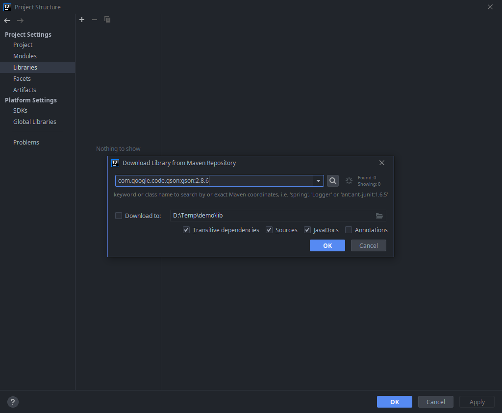
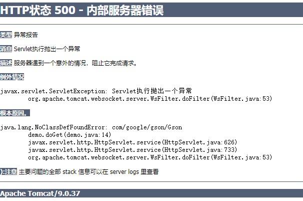
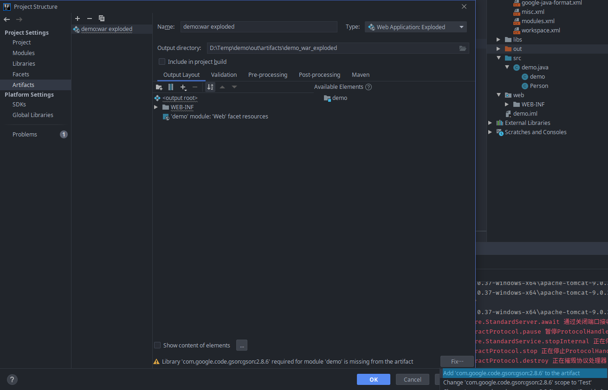
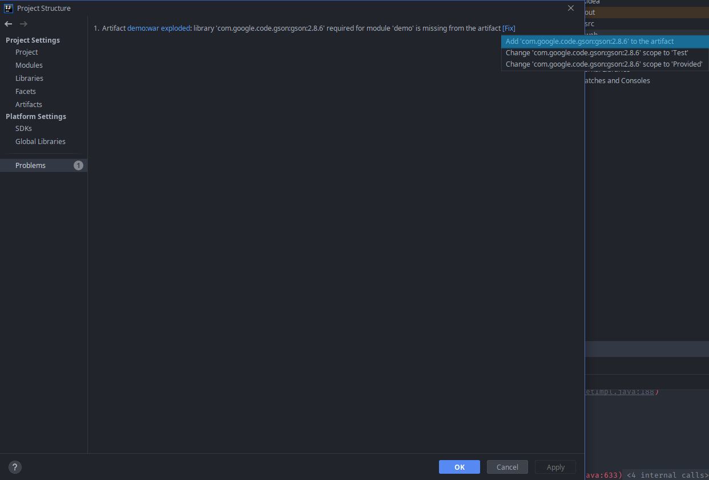
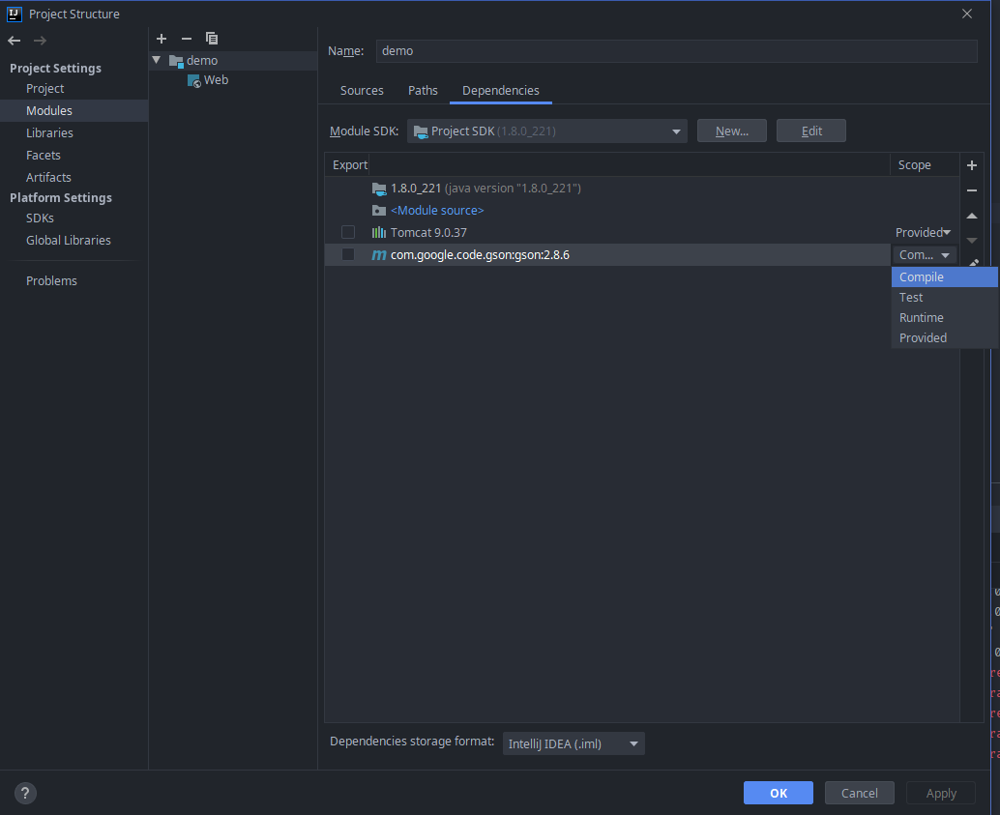

在学习 tomcat 开发 Web 项目的过程中，有时需要引入第三方库来简化某些操作，避免自己重复造轮子。和一般的 java 项目引入第三方库的步骤有所不同，如果仅仅只在项目中通过 idea 的 Project Structures 中的 Modules Dependencies 或者 Libraries 引入第三方库是不够的。因为还需要在部署的时候带上依赖才能正常运行。
环境
- IDEA 2019.3
- java 8
- tomcat 9
实例
目标
我们希望在当前 Web 工程中引入 Google 的 Gson 库，以支持 json 的序列化和反序列化。
解决方案
与通常的 java 项目的依赖添加步骤类似，首先要在 Project Structures 对话框的 Libraries 页面中添加 Gson 库，这里使用 Maven 或者本地 jar 包的方式都是可以的。（下面使用 Maven 方式进行演示）

依赖安装完成后，就可以自定义一个 Servlet 进行测试：
1 | import javax.servlet.ServletException; |
比较坑爹的是，idea 不会有任何明显的错误提示，编译运行都不会产生报错或者警告。但是当访问相应页面的时候就会得到下面的异常页面：

被抛出的异常是 NoClassDefFoundError，这意味着编译时 Gson 库是存在的，但是在运行时却没能找到。网上对类似问题的解决方法都是简单粗暴地将所依赖的 JAR 包放在 tomcat 的库目录下，且不说这样做能不能成功，这种做法一来不优美，二来不具有可移植性，属于没有办法的办法。
那么真的就没有其它办法了吗？答案是否定的。事实上 Java Web 项目和普通的 Java 项目不同，它拥有一个部署的过程，这一过程会复制必要的的字节码文件和静态文件到 out 目录。如果引入了第三方库，但只进行了通常的依赖安装步骤，那么 idea 在部署时是不会输出依赖的。对于这一问题 idea 也并不是完全没有提示，在 Project Structure 中 Problems 或 Artifacts 页面，打开这两个页面之一就可以看到相关提示和快捷修复入口：


▲ 值得吐槽的是，这两个页面的提示实在是过于不起眼，很容易被忽略掉。
本质上，如果通过上面的方式修复了问题，那么当前模块下的 .idea/artifacts 目录中有一个 artifact 的配置文件会发生改变：
1 | <component name="ArtifactManager"> |
依赖作用域 | dependency scope
其实到这里，问题其实应该已经解决了，但是不知道读者是否注意到没有，在修复的过程中，除了第一选项，还有两个选项可供使用，他们的区别在于依赖作用域的不同。

在 idea 中，对于依赖项有四种作用域：
- Compile（编译）：构建、测试和运行时所必需的（默认范围）
- Test（测试）：编译和运行单元测试时所需
- Runtime（运行时）：包含在源和测试源的类路径之中，但仅在运行阶段
- Provided（提供）：用于构建和测试项目
| 范围 | 当编译源代码时 | 当运行源代码时 | 当编译测试时 | 当运行测试时 |
|---|---|---|---|---|
| Compile（编译） | + | + | + | + |
| Test（测试） | - | - | + | + |
| Runtime（运行时） | - | + | - | + |
| Provided（提供） | + | - | + | + |
根据上面的表格，如果我们在项目中对依赖项使用 Provided ，运行时是不会使用这个依赖的，但在我测试之后发现对于上面那个例子来说这样做并不会有问题，可能 artifact 的配置文件的优先级更高。